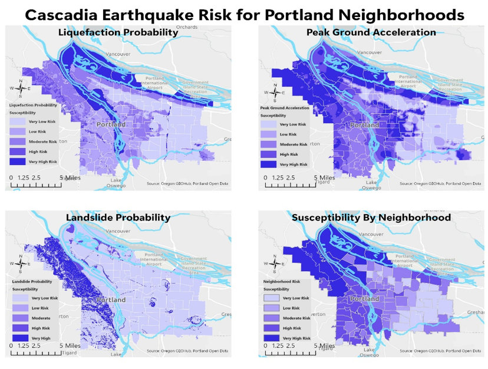
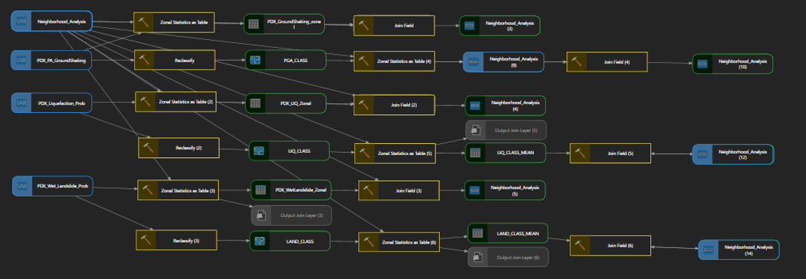

Project Overview
This project examined earthquake risk associated with the Cascadia Subduction Zone by combining hazard, population, and environmental datasets. The analysis was designed to identify differences in earthquake exposure across neighborhoods in the Portland area.
Research Question
How does earthquake hazard and population density vary across the Portland metropolitan area, and which neighborhoods experience the greatest combined risk?
Methods
The analysis incorporated multiple raster datasets representing earthquake-related hazards. Raster data were reclassified and combined with demographic information to develop neighborhood-level measures of exposure and risk.

Hazard layers used to evaluate earthquake exposure across the Portland metropolitan area.
ModelBuilder Workflow
A ModelBuilder workflow was developed to organize and automate major steps in the spatial analysis, creating a repeatable analytical process rather than relying entirely on individual manual operations.

ModelBuilder workflow used to organize the spatial analysis and automate key geoprocessing steps.
Results
The final analysis integrated the processed hazard and population datasets to identify spatial patterns in earthquake exposure across the Portland metropolitan area.

Final map showing the resulting spatial pattern of earthquake risk across the Portland metropolitan area.
Key Takeaways
- The analysis revealed spatial variation in earthquake exposure across the Portland metropolitan area.
- Combining hazard information with population characteristics provided a more useful measure of potential risk than examining hazard alone.
- ModelBuilder helped organize the analytical workflow and make the process more reproducible.
Project Report
Explore the complete analysis
The full project report documents the datasets, analytical workflow, spatial analysis, maps, results, and conclusions.
View Project Report →